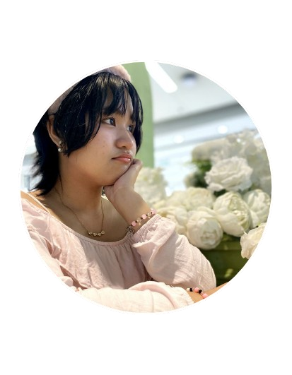
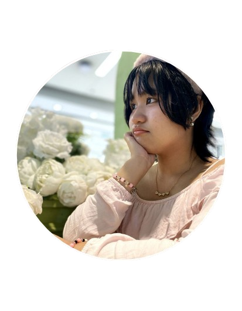
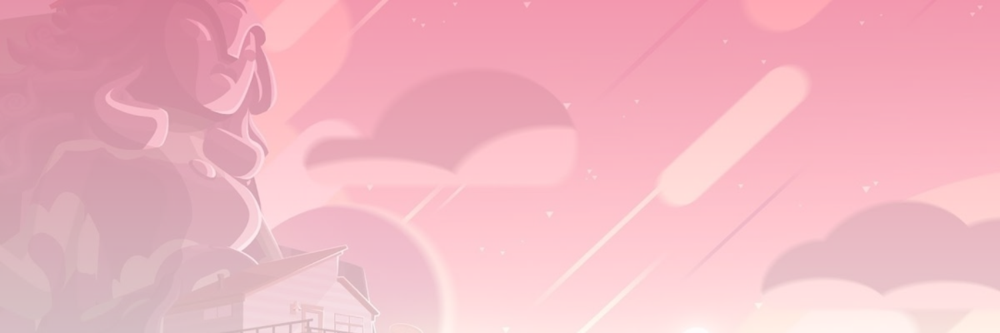
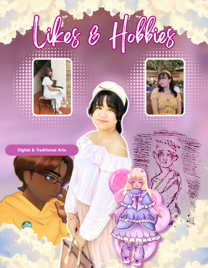
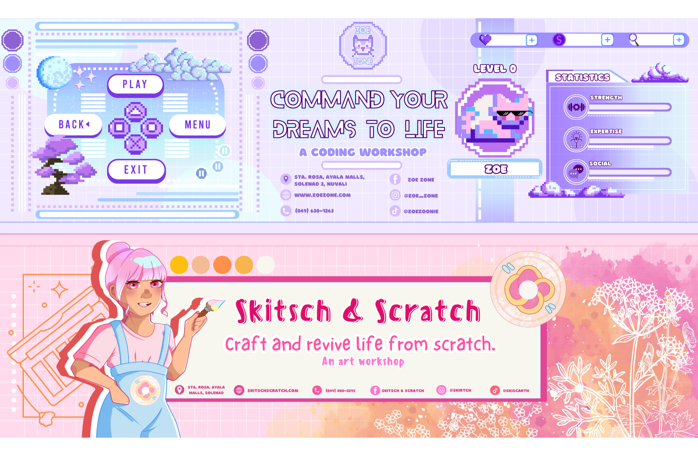

At your service! I am an enthusiastic student with a passion for the arts. My academic journey as a second-year Computer Science student in City College of Calamba opens one skill after another, broadening the fields I wish to partake in a never-ending and constantly improving technology.
I specialize in the art of design as every color, structure, and logic is considered and planned for — traditionally, digitally, and now, technologically. As a student and an artist, I enjoy learning meaningful ways to incorporate design in technology. As a woman filled with curiosity, I am interested in animation, character design, webcomic production, and painting.
Change is a concept that continuously occurs within the digital world, and through it, I believe embracing changes and improving such changes would bring growth and quality life to the people around us.



The following are the current skills I possess which I use for my service:
